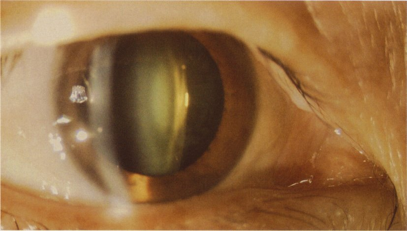
| 選択肢 | 解説 |
|---|---|
| ａ 結 膜 | 結膜は眼球前面と眼瞼裏面を覆う粘膜で、充血・眼脂・濾胞や乳頭の増殖が主な所見になる。写真では結膜に充血も眼脂も無く、白色に保たれている。そもそも結膜は光軸上に無いため、結膜疾患だけで視力が0.03まで落ちることは（結膜弛緩症や翼状片が瞳孔にかかる例外を除いて）ない。 |
| ｂ 虹 彩 | 虹彩は瞳孔径を調節する組織で、炎症（虹彩毛様体炎）では毛様充血・前房内細胞・角膜後面沈着物・虹彩後癒着を伴う。写真の虹彩は茶色の紋理を保ち、癒着も結節も無い。 |
| ◯ ｃ 水晶体 | 写真では瞳孔領の水晶体が黄白色〜緑白色にびまん性に混濁し、細隙光の断面でも水晶体全体が白く光っている。85歳という年齢、矯正しても0.5までしか出ない（＝屈折矯正では取り戻せない）視力低下と合わせて、加齢白内障である。視力0.03（0.5 ×－6.5D）の表記は「裸眼0.03、－6.5Dの凹レンズで矯正して0.5」の意味で、強度近視があってなお矯正視力が0.5に留まる＝中間透光体の混濁がある。 |
| ｄ 硝子体 | 硝子体の混濁（出血・炎症細胞・後部硝子体剝離）でも視力は落ちるが、主訴は飛蚊症で、細隙灯顕微鏡の前眼部写真では評価できない。硝子体を診るには倒像鏡や眼底検査、超音波Bモードを用いる。 |
| ｅ 視神経乳頭 | 視神経乳頭の障害（緑内障・視神経炎・虚血性視神経症）は眼底検査で診る部位であり、前眼部写真には写らない。また視神経障害では相対的瞳孔求心路障害〈RAPD〉や視野異常が前面に出る。 |
| 矯正で | 考える病態 | 次の一手 |
|---|---|---|
| 戻る | 屈折異常（近視・遠視・乱視・老視） | 眼鏡・コンタクトレンズ |
| 戻らない （前眼部に濁り） | 白内障・角膜混濁 | 細隙灯顕微鏡 |
| 戻らない （前眼部は澄明） | 網膜・視神経疾患、硝子体混濁 | 眼底検査・OCT・視野・ERG |
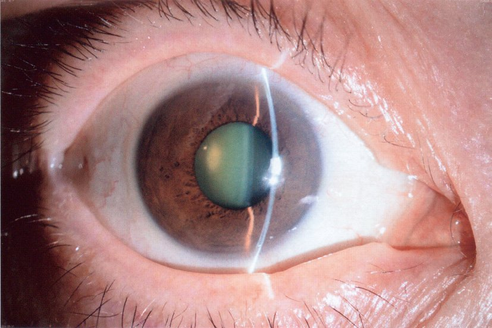
| 選択肢 | 解説 |
|---|---|
| ａ 内反症 | 眼瞼が内側へ向き、睫毛が角膜をこする疾患。症状は異物感・流涙・充血で、角膜上皮障害が高度になれば視力も落ちるが、所見は眼瞼と角膜にあり水晶体は透明である。写真の眼瞼は外向きで睫毛も正常である。 |
| ◯ ｂ 白内障 | 写真では未散瞳の瞳孔領が緑白色〜黄白色に濁り、細隙光の断面で水晶体が白く光る＝水晶体の混濁である。72歳という年齢、矯正不能の視力低下、眼圧正常、眼底正常、そして2年前に反対眼が同じ症状で手術を受けている——両眼性に進行する加齢白内障の典型経過である。左眼が「1.0（矯正不能）」で良好なのは眼内レンズ挿入術後で正視に仕上がっているためと読む。 |
| ｃ 円錐角膜 | 角膜中央〜下方が菲薄化して前方に円錐状に突出する疾患で、10〜20歳代に発症し進行する。不正乱視のため眼鏡では矯正できずハードコンタクトレンズを要する点は「矯正不能」と紛らわしいが、72歳の初発は考えにくく、所見は角膜（Fleischer輪・Vogt線条・Munson徴候）にある。 |
| ｄ 急性緑内障発作 | 隅角が閉塞して眼圧が急上昇する病態で、眼痛・頭痛・悪心・嘔吐・虹視・充血を伴い、眼圧は40〜60mmHg以上になる。本例は眼圧15mmHgと正常で、痛みの訴えも無い。 |
| ｅ 原発開放隅角緑内障 | 視神経乳頭の陥凹拡大とそれに対応する視野障害が本態で、進行するまで自覚症状に乏しい。本例は眼底に異常を認めないと明記されており、乳頭陥凹が無い以上は否定される。 |
| 疾患 | 痛み | 眼圧 | 決め手 |
|---|---|---|---|
| 白内障 | なし | 正常 | 水晶体の混濁・矯正不能・徐々に進行 |
| 急性緑内障発作 | 強い（＋頭痛・嘔吐） | 著明高値 | 虹視・角膜浮腫・中等度散瞳・浅前房 |
| 原発開放隅角緑内障 | なし | 正常〜高値 | 乳頭陥凹拡大＋視野障害 |
| 円錐角膜 | なし | 正常 | 若年発症・不正乱視・角膜突出 |
| 内反症 | 異物感 | 正常 | 睫毛が角膜に接触・角膜上皮障害 |
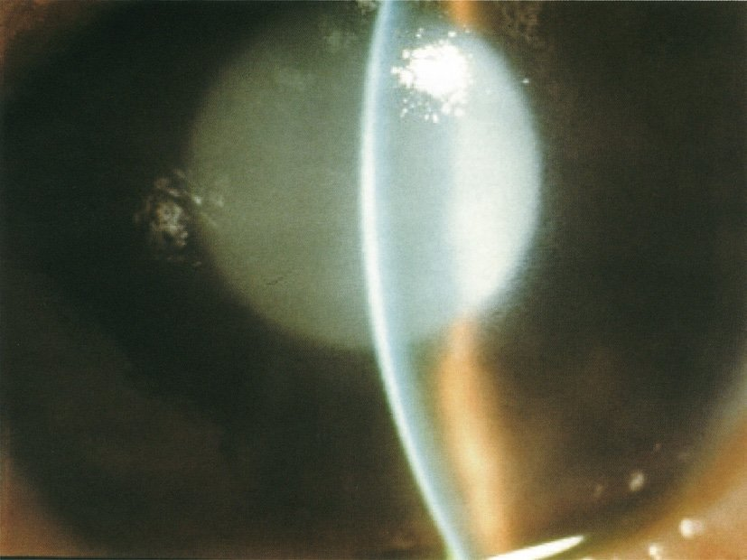
| 選択肢 | 解説 |
|---|---|
| ａ 抗菌薬投与 | 感染性眼内炎や角膜潰瘍を想定した治療。本例は数日で急速に悪化した感染の経過ではなく、半年かけて視力が落ちた末の眼圧上昇であり、発熱や膿性眼脂などの感染徴候も無い。 |
| ｂ 強膜内陥術 | 裂孔原性網膜剝離に対する術式で、シリコンスポンジを強膜外から縫着して眼球壁を内方へ陥入させ、網膜裂孔を閉鎖する。網膜剝離では眼圧はむしろ低下する傾向にあり、53mmHgという高値は説明できない。 |
| ◯ ｃ 水晶体摘出術 | 写真では瞳孔領全体が白色に濁り、角膜も浮腫状に混濁している＝成熟〜過熟白内障である。若年時の眼外傷を契機に外傷性白内障が緩徐に進行し、過熟期に至って変性した水晶体タンパクが囊を通って前房へ漏出、これを貪食したマクロファージが線維柱帯を閉塞して眼圧が53mmHgまで上がった——水晶体融解緑内障〈phacolytic glaucoma〉である。原因が水晶体そのものにある以上、水晶体を摘出しなければ根治しない（降圧薬・ステロイドは術前の一時しのぎ）。 |
| ｄ 眼球マッサージ | 網膜中心動脈閉塞症で塞栓を末梢へ流す目的の応急処置である。同症は突然の無痛性視力低下で、眼圧は正常、眼底に桜実紅斑をみる。本例の病態とは無関係である。 |
| ｅ 全層角膜移植術 | 角膜実質を含む全層の混濁（角膜白斑、円錐角膜の進行例、水疱性角膜症）に行う。本例の角膜混濁は高眼圧による二次的な上皮性浮腫で、眼圧が下がれば改善する。角膜自体が原発ではない。 |
| 白内障の病期 | 水晶体の状態 | 起こりうること |
|---|---|---|
| 初発期 | 部分的な混濁 | 無症状〜軽い霧視 |
| 膨潤期 | 水分を吸って厚くなる | 浅前房→急性閉塞隅角緑内障 |
| 成熟期 | 皮質全体が白色混濁 | 眼底透見不能・手動弁 |
| 過熟期 | 皮質が液化し核が沈下 | タンパク漏出→水晶体融解緑内障 |
| 選択肢 | 解説 |
|---|---|
| ａ 水晶体摘出には冷凍凝固装置が用いられる。 | 冷凍凝固プローブで水晶体を凍結接着し囊ごと引き抜くのは水晶体囊内摘出術〈ICCE〉で、1980年代までの術式である。囊を残さないため眼内レンズを囊内に固定できず、硝子体脱出のリスクも高い。現在は超音波乳化吸引術〈PEA〉に置き換わり、水晶体の完全脱臼など特殊例に限られる。 |
| ｂ 眼内レンズを挿入すると調節力が回復する。 | 通常の単焦点眼内レンズは固定焦点で、毛様体筋が収縮しても厚みが変わらない＝調節力は戻らない。そのため術後は遠方に合わせれば近方に、近方に合わせれば遠方に眼鏡が必要になる。多焦点眼内レンズは複数の焦点を作って眼鏡依存を減らすが、これも「調節」ではなく光を分配しているだけで、コントラスト低下やグレア・ハローを伴う。 |
| ◯ ｃ 水晶体を摘出すると正視の場合には遠視になる。 | 水晶体は約+20Dの凸レンズであり、これを取り去ると眼全体の屈折力が大きく不足する＝無水晶体眼は強度遠視（約+10〜+12Dの眼鏡を要する）になる。だからこそ摘出した水晶体の代わりに眼内レンズを挿入して屈折力を補うのである。「正視の場合には」という条件は元の屈折状態にかかわらず遠視側へ大きくずれることを述べたもので、強度近視眼で水晶体を抜くと近視が軽くなるのも同じ理屈である。 |
| ｄ 眼内レンズは劣化のため入れ替える必要がある。 | 眼内レンズはアクリルやシリコーンの高分子材料で、生涯にわたり入れ替えは不要である。術後年余を経て霧視が出た場合はレンズの劣化ではなく後発白内障（後囊の混濁）であり、YAGレーザー後囊切開で対処する（NO.83）。 |
| ｅ 眼内レンズは虹彩に固定するタイプが用いられる。 | 現在の標準は水晶体囊内（囊内固定）で、残した前囊・後囊の袋の中にレンズを収める。虹彩支持型や前房型は角膜内皮を傷めて水疱性角膜症を起こしやすく（NO.89）、ほぼ用いられない。囊が破れた場合は毛様溝縫着や強膜内固定を選ぶ。 |
| 調節力 | 像の大きさ | 備考 | |
|---|---|---|---|
| 無水晶体眼＋眼鏡 | なし | 約25%拡大 | 片眼例では融像不能 |
| 無水晶体眼＋CL | なし | 約7%拡大 | 装脱着の負担 |
| 眼内レンズ（囊内） | なし | ほぼ変化なし | 現在の標準 |
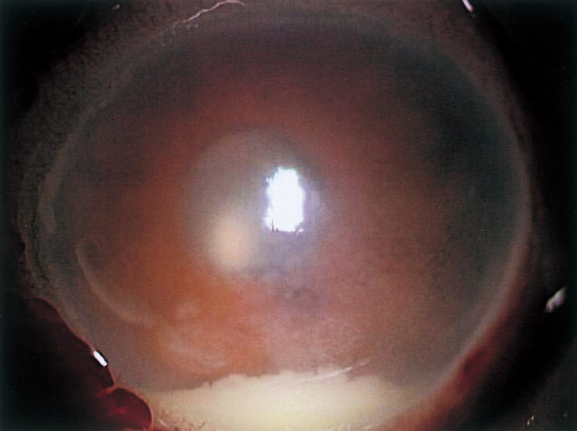
| 選択肢 | 解説 |
|---|---|
| ａ 縮瞳薬点眼 | ピロカルピンなどの縮瞳薬は隅角を開いて眼圧を下げる薬で、閉塞隅角緑内障発作に用いる。眼内炎では逆に散瞳薬（と場合により毛様体麻痺薬）を用いて虹彩後癒着を防ぎ、眼底を観察しやすくするのが原則である。縮瞳させると眼内が観察できず、炎症下では虹彩後癒着を固めてしまう。 |
| ◯ ｂ 抗菌薬点滴静注 | 術後眼内炎は細菌感染であり、治療の柱は抗菌薬の投与である。実際には硝子体内注入（バンコマイシン＋セフタジジムなど）が最も濃度を稼げるが、本問の選択肢には無いため全身投与（点滴静注）を選ぶ。血液眼関門があるため点眼や内服では硝子体腔に十分な濃度が入らず、静注＋硝子体内注入＋頻回点眼を組み合わせるのが実際である。 |
| ｃ ステロイドパルス療法 | 大量ステロイドの全身投与は免疫を強力に抑制するため、感染が制御されていない段階で単独に行えば感染を煽る。眼内炎でも炎症の鎮静を目的にステロイドを併用することはあるが、それは有効な抗菌薬が入った後の話であり、「パルス療法」を治療の柱に据えるのは誤りである。正答率7%の主因はこの肢を選んでしまうことにある。 |
| ｄ 周辺虹彩切除術 | レーザー虹彩切開術と同じく瞳孔ブロックを解除する手技で、閉塞隅角緑内障の治療である。本例は眼圧上昇による発作ではなく感染であり、隅角に問題は無い。 |
| ◯ ｅ 硝子体手術 | 硝子体は血管を持たず免疫細胞も届きにくいうえ、細菌にとって格好の培地になる。重症例（視力が光覚弁レベル、あるいは初期治療に反応しない例）では硝子体切除術で感染巣・毒素・炎症産物を物理的に除去し、同時に薬剤を眼内へ行き渡らせる。本例は術後3日で眼痛・前房蓄膿をきたした急性術後眼内炎であり、抗菌薬と硝子体手術の併用が適切である。 |
| 術後の視力低下 | 時期 | 痛み | 決め手 |
|---|---|---|---|
| 術後眼内炎 | 2〜7日 | あり（強い） | 前房蓄膿・硝子体混濁 |
| 術後の炎症（通常経過） | 数日 | 軽度 | ステロイド点眼で軽快 |
| 駆逐性出血 | 術中〜直後 | 激痛 | 術中の眼内圧上昇・眼内容脱出 |
| 囊胞様黄斑浮腫 | 数週〜数か月 | なし | OCTで黄斑の囊胞 |
| 後発白内障 | 数か月〜数年 | なし | 徹照像で後囊混濁 |
| 選択肢 | 解説 |
|---|---|
| ａ 結膜杯細胞 | 結膜上皮に散在してムチンを分泌する細胞で、涙液の安定性に関わる。評価には結膜印象細胞診を用い、Stevens-Johnson症候群や眼類天疱瘡、ビタミンA欠乏で減少する。 |
| ◯ ｂ 角膜内皮細胞 | スペキュラーマイクロスコピー〈鏡面反射顕微鏡・角膜内皮細胞検査〉は、角膜内皮の鏡面反射を利用して内皮細胞を非接触で撮影・計数する検査である。角膜内皮細胞は再生しない（分裂しない）ため、超音波エネルギーや器具の接触で失われた分は戻らない。術前の細胞密度が低い（目安：1000〜1500/mm²未満）眼では術後に水疱性角膜症を起こす危険が高く、術式や超音波の使い方を変える判断材料になる。 |
| ｃ 水晶体上皮細胞 | 前囊の内側にある細胞で、術後に遺残して増殖・化生すると後発白内障の原因になる（NO.83）。臨床で個々の細胞を計数する検査は無く、術前評価の対象ではない。 |
| ｄ 硝子体細胞 | 硝子体中の炎症細胞は細隙灯顕微鏡（前部硝子体）や眼底検査で評価し、ぶどう膜炎や眼内炎の活動性の指標になる。スペキュラーマイクロスコピーの対象ではない。 |
| ｅ 網膜色素上皮細胞 | 網膜の最外層にある単層の細胞で、評価は眼底検査・眼底自発蛍光・OCTによる。加齢黄斑変性や網膜色素変性で障害される。 |
| 検査 | 見るもの | 主な用途 |
|---|---|---|
| スペキュラーマイクロスコピー | 角膜内皮細胞（密度・形態） | 白内障手術の術前評価・水疱性角膜症 |
| 細隙灯顕微鏡 | 前眼部の断面（角膜・前房・虹彩・水晶体） | 白内障・角膜炎・ぶどう膜炎の診断 |
| 角膜形状解析（トポグラフィ） | 角膜前面の曲率分布 | 円錐角膜・不正乱視・屈折矯正手術 |
| パキメトリ（角膜厚計） | 角膜の厚さ | 眼圧の補正・円錐角膜・内皮機能 |
| 光干渉断層計〈OCT〉 | 網膜の断層・視神経線維層厚 | 黄斑疾患・緑内障（透光体が濁ると撮れない） |
| 眼軸長測定（光学式・超音波） | 角膜前面〜網膜までの長さ | 眼内レンズ度数計算（NO.87・92） |
| 網膜電図〈ERG〉 | 網膜の電気的機能 | 透光体混濁で眼底が見えないときの網膜機能評価（NO.86・94） |
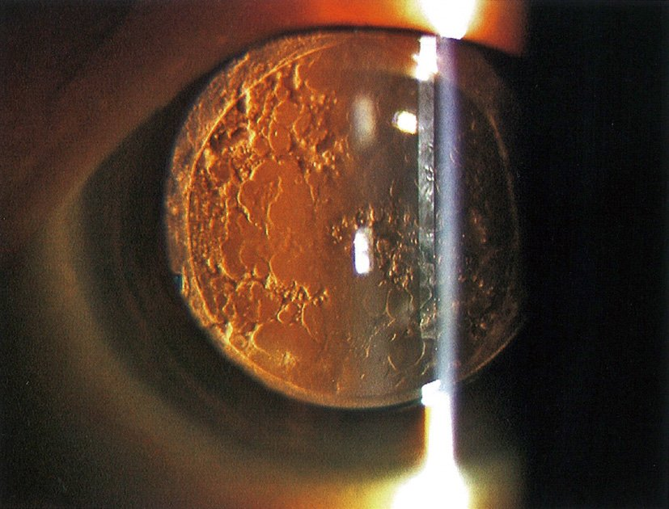
| 選択肢 | 解説 |
|---|---|
| ａ 角膜白斑 | 角膜実質の瘢痕による白色混濁で、外傷や角膜潰瘍の治癒後に残る。徹照像では角膜の高さに境界明瞭な陰影として写り、本例のような瞳孔領の後方に広がる泡状・膜状の混濁とは像が異なる。 |
| ｂ 角膜後面沈着物 | 角膜内皮面に付着した炎症細胞の集塊で、ぶどう膜炎（虹彩毛様体炎）の所見である。毛様充血・前房内フレア・眼痛や羞明を伴い、「術後2年の無痛性の霧視」という経過に合わない。 |
| ｃ 前房蓄膿 | 前房下方に貯留した膿で、眼内炎や重症の角膜潰瘍にみられる（NO.81）。強い眼痛・充血・急激な視力低下を伴う急性の所見であり、本例には無い。 |
| ◯ ｄ 後発白内障 | 徹照像で瞳孔領に泡状・真珠様の混濁が広がり、赤色反射が斑状に遮られている＝後発白内障である。白内障手術で残した後囊に、取り切れなかった水晶体上皮細胞が遊走・増殖してElschnig真珠を作ったり線維化したりして生じる。術後数か月〜数年で無痛性・緩徐に霧視が進むのが典型で、本例の「術後2年・霧視」に一致する。 |
| ｅ 硝子体混濁 | 硝子体中の出血・炎症細胞・変性物による混濁で、飛蚊症を主訴とすることが多い。徹照像でも影として写りうるが、眼球運動に伴って揺れ動く点で後囊に固定された混濁と区別できる。本例の混濁は後囊面に張り付いた真珠様・膜様の形態である。 |
| 術後の霧視 | 時期 | 徹照像 | 治療 |
|---|---|---|---|
| 後発白内障 | 数か月〜数年 | 瞳孔領に真珠様・膜様の影 | YAGレーザー後囊切開 |
| 囊胞様黄斑浮腫 | 術後1〜3か月 | 異常なし | OCTで診断・NSAID/ステロイド点眼 |
| 水疱性角膜症 | 数か月〜数年 | 角膜全体が曇り反射が拾えない | 角膜内皮移植 |
| 眼内レンズの偏位・落下 | いつでも | レンズ縁が瞳孔領にかかる | 整復・縫着 |
| 選択肢 | 解説 |
|---|---|
| ａ 虹 視 | 光の周りに虹の輪が見える現象で、角膜上皮浮腫によって光が回折することで生じる。代表は急性緑内障発作（眼圧の急上昇→角膜浮腫）で、眼痛・頭痛・悪心を伴う。 |
| ｂ 小 視 | 物が小さく見える現象（小視症）で、網膜視細胞の間隔が広がることで起こる。網膜が浮き上がる中心性漿液性脈絡網膜症や黄斑部の網膜剝離でみられる（逆に網膜が皺で寄せられると大視症）。 |
| ◯ ｃ 羞 明 | 水晶体が濁ると入ってきた光が散乱し、網膜上でコントラストが失われてまぶしさとして自覚される。白内障の初期は視力そのものはまだ保たれていても、羞明・霧視・昼盲・夜間の対向車のライトがぎらつくといった「見え方の質」の低下が先に出る。とくに皮質白内障や後囊下白内障では明所で瞳孔が縮むと混濁部が光軸を占める割合が増えるため、明るい所でかえって見えにくい（昼盲）という特徴的な訴えになる。 |
| ｄ 飛蚊症 | 視野に黒い点や糸くずが浮遊して見える症状で、硝子体の混濁が網膜に影を落として生じる。生理的な後部硝子体剝離のほか、網膜裂孔・網膜剝離・硝子体出血・ぶどう膜炎で急に増える（急な増加＋光視症は緊急）。 |
| ｅ 視野狭窄 | 視野の周辺から見える範囲が狭くなる症状で、緑内障（網膜神経節細胞の障害）や網膜色素変性が代表である。白内障は光を散乱させるだけで視野の一部を欠損させる病気ではないため、進行しても全体が霞むだけで視野狭窄にはならない。 |
| 症状 | 機序 | 代表疾患 |
|---|---|---|
| 羞明・霧視・昼盲 | 中間透光体での光の散乱 | 白内障・角膜混濁 |
| 虹視 | 角膜上皮浮腫による回折 | 急性緑内障発作 |
| 飛蚊症 | 硝子体混濁の影 | 後部硝子体剝離・網膜裂孔・硝子体出血 |
| 光視症 | 硝子体の牽引で網膜が刺激される | 網膜裂孔・網膜剝離 |
| 変視症・小視症 | 視細胞の配列が乱れる | 加齢黄斑変性・黄斑上膜・中心性漿液性脈絡網膜症 |
| 視野狭窄 | 網膜神経節細胞・視細胞の脱落 | 緑内障・網膜色素変性 |
| 単眼複視 | 屈折面の不整 | 白内障・乱視・円錐角膜 |
| 両眼複視 | 両眼の視線がずれる | 外眼筋麻痺・甲状腺眼症・重症筋無力症 |
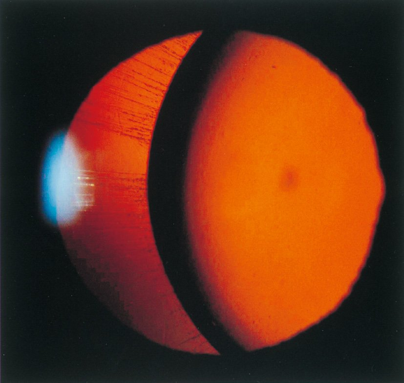
| 選択肢 | 解説 |
|---|---|
| ◯ ａ クモ指 | 徹照像で瞳孔領の一部に水晶体の辺縁（赤道部）が弧を描いて写り込み、その外側に水晶体を欠いた領域が見える＝水晶体亜脱臼である。外傷歴が無く、身長179cm・体重60kgと高身長でやせ型の44歳女性——Marfan症候群を考える。Marfan症候群では細長い四肢とクモ指（arachnodactyly）が骨格徴候の代表で、ほかに漏斗胸・側弯・関節過可動、大動脈基部拡張／大動脈解離・僧帽弁逸脱を伴う。 |
| ｂ 関節炎 | 関節リウマチや若年性特発性関節炎では強膜炎・上強膜炎・ぶどう膜炎・乾燥性角結膜炎を合併するが、水晶体の偏位は起こさない。Marfan症候群の関節は「炎症」ではなく過可動が特徴である。 |
| ｃ 胸腺腫瘍 | 胸腺腫に伴う眼症状といえば重症筋無力症による眼瞼下垂と両眼複視である。日内変動（夕方に悪化）を伴い、水晶体そのものは正常である。 |
| ｄ 陰部潰瘍 | 口腔内アフタ・外陰部潰瘍・皮膚症状・眼症状はBehçet病の4主症状である。眼症状は再発性の非肉芽腫性ぶどう膜炎（前房蓄膿性虹彩毛様体炎、網膜血管炎）で、水晶体偏位はきたさない。 |
| ｅ 知的障害 | 高身長＋水晶体偏位で鑑別に挙がるホモシスチン尿症では知的障害と血栓症を伴う——ただし同症は常染色体潜性遺伝で乳幼児期から症状が出るため、44歳で初めて水晶体亜脱臼に気付いた本例には合わない。また水晶体の偏位方向もホモシスチン尿症は下鼻側で、Marfan症候群の上耳側と対照的である。 |
| Marfan症候群 | ホモシスチン尿症 | |
|---|---|---|
| 原因 | FBN1変異（フィブリリン-1） | シスタチオニンβ合成酵素欠損 |
| 遺伝形式 | 常染色体顕性 | 常染色体潜性 |
| 偏位の方向 | 上耳側 | 下鼻側 |
| 知能 | 正常 | 知的障害 |
| 致命的合併症 | 大動脈解離・大動脈基部拡張 | 動静脈血栓症 |
| その他 | 漏斗胸・側弯・関節過可動・自然気胸 | 骨粗鬆症・新生児マススクリーニング対象 |
| 治療 | β遮断薬・ARB、大動脈基部置換 | ビタミンB6大量・低メチオニン食・ベタイン |
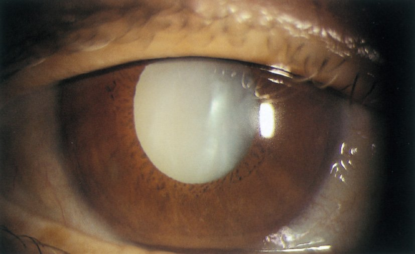
| 選択肢 | 解説 |
|---|---|
| ａ 調節検査 | 毛様体筋の働きによるピント合わせの能力（調節力・調節近点）を測る検査で、主に調節麻痺・調節緊張・老視の評価に用いる。76歳では生理的に調節力はほぼ0Dであり、手動弁の眼で測る意味は無い。 |
| ｂ 屈折検査 | 近視・遠視・乱視の度数を測る検査だが、成熟白内障では光が水晶体を通らないためオートレフラクトメータは測定不能になる。仮に測れても、視力低下の原因が混濁である以上眼鏡で矯正できない（矯正不能）。 |
| ｃ 角膜知覚検査 | 三叉神経第1枝の機能をみる検査で、角膜ヘルペス・帯状疱疹後・糖尿病・長期CL装用による神経麻痺性角膜症で低下する。本例の角膜は透明で、知覚を疑う所見が無い。 |
| ◯ ｄ 網膜電図〈ERG〉 | 写真では散瞳下の瞳孔領が一様に白色に濁っており、成熟白内障である。白内障による視力低下なら手術で回復が見込めるが、眼底が透見不能のため「網膜や視神経も同時に傷んでいないか」が分からない。ERGは網膜に光刺激を与えて生じる電位を混濁した中間透光体を越えて記録できるため、眼底が見えない眼の網膜機能を評価できる唯一の検査である。ERGが正常なら手術で視力回復が期待でき、消失していれば網膜側の重篤な障害を意味して術後の視力予後は悪い——術前の説明に直結する。 |
| ｅ 光干渉断層計〈OCT〉 | 近赤外光の干渉を用いて網膜の断層像を得る検査で、黄斑疾患や緑内障の評価に不可欠である——しかし光が網膜まで届いて返ってくる必要があるため、成熟白内障のように中間透光体が強く濁った眼では撮影できない（信号が得られない）。「眼底が観察できない」という記載はOCTも撮れないことを同時に意味している。 |
| 波・条件 | 由来 | 異常となる疾患 |
|---|---|---|
| a波 | 視細胞 | 網膜色素変性・網膜中心動脈閉塞症（全層虚血） |
| b波 | 双極細胞・Müller細胞 | 先天停在性夜盲（陰性型ERG＝b波のみ低下） |
| 桿体応答（暗順応） | 桿体系 | 網膜色素変性の早期（消失する） |
| 錐体応答・フリッカ（明順応） | 錐体系 | 錐体ジストロフィ |
| 局所ERG・多局所ERG | 黄斑部 | 黄斑疾患（通常のERGは黄斑病変では正常のことが多い） |
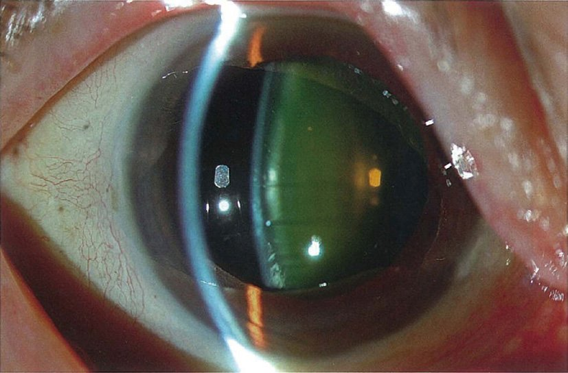
| 選択肢 | 解説 |
|---|---|
| ◯ ａ 眼軸長 | 角膜前面から網膜（中心窩）までの長さで、眼内レンズの度数計算に必須の値である。光学式眼軸長測定（部分干渉計）が標準で、成熟白内障などで測れない場合は超音波Aモードを用いる。眼軸長が1mm違うとおよそ2.5〜3Dの誤差になるため、術後屈折を決める最大の因子である。 |
| ｂ 角膜厚 | 角膜内皮の機能や眼圧測定値の補正、円錐角膜・屈折矯正手術の評価に用いる。白内障手術のリスク評価として角膜内皮を診る意義はあるが、眼内レンズの度数計算には入らない——本問が問うのは「必要な検査項目」＝度数決定に不可欠な2つである。 |
| ｃ 前房深度 | 最新の度数計算式では術後の眼内レンズ位置の予測に前房深度を用いるものもあるが、古典的なSRK/T式などは眼軸長と角膜曲率半径の2つで計算する。また前房深度は浅前房（閉塞隅角）の評価にも用いる。 |
| ｄ 水晶体厚 | 水晶体の厚さは膨潤期の判定や一部の度数計算式の補助因子になりうるが、そもそも摘出してしまう組織であり必須項目ではない。術式選択で意味を持つのは厚みではなく核硬度である（NO.96）。 |
| ◯ ｅ 角膜曲率半径 | 角膜前面のカーブの半径で、角膜屈折力（約+43D）に直結する。眼内レンズの度数は「眼軸長」と「角膜屈折力」から計算式（SRK/T、Barrett、Haigisなど）で決めるため、ケラトメータやトポグラフィで角膜曲率半径を測ることが必須になる。同時に角膜乱視の量と軸も分かり、トーリック眼内レンズを使うかの判断材料になる。 |
| 目的 | 検査 | 分かること |
|---|---|---|
| レンズの度数を決める | 眼軸長測定 | 網膜までの距離（誤差が最も効く） |
| 角膜曲率（ケラトメトリ） | 角膜屈折力・角膜乱視 | |
| 手術のリスクを見積もる | 角膜内皮細胞検査 | 水疱性角膜症のリスク（NO.82） |
| 細隙灯顕微鏡（核硬度・散瞳・Zinn小帯） | 超音波量の見積もり・術式選択（NO.96） | |
| 術後の見え方を予測する | 眼底検査・OCT（透見可能なら） | 黄斑疾患・緑内障の併存 |
| ERG・超音波Bモード（透見不能なら） | 網膜の機能と形態（NO.86・94） | |
| 全身の準備 | 血液検査・心電図、内服薬の確認 | 抗凝固薬・α1遮断薬（術中虹彩緊張低下症候群）の把握 |
| 選択肢 | 解説 |
|---|---|
| ◯ ａ アトピー性皮膚炎 | 「季節に関係ない眼の痒み」「顔面のびまん性潮紅」「頸部の色素沈着（dirty neck）」はアトピー性皮膚炎の所見である。若年で両眼性の白内障と網膜剝離を合併しており、アトピー性皮膚炎の眼合併症の典型的な組合せになっている。顔面を掻いたり叩いたりする慢性の機械的刺激と、長期の炎症・ステロイド使用が背景にある。 |
| ｂ 全身性エリテマトーデス〈SLE〉 | 頬部紅斑（蝶形紅斑）は光線過敏部位に一致した紅斑で、痒みは通常伴わない。眼病変は網膜綿花様白斑・網膜血管炎・乾燥性角結膜炎で、白内障はステロイド治療の副作用として出るにとどまる。 |
| ｃ 皮膚筋炎 | 上眼瞼のヘリオトロープ疹と手指関節背面のGottron徴候、近位筋の筋力低下が特徴である。悪性腫瘍の合併検索が要る疾患だが、白内障や網膜剝離を高率に合併するわけではない。 |
| ｄ 強直性脊椎炎 | HLA-B27関連の脊椎関節炎で、眼合併症は急性前部ぶどう膜炎（片眼性・再発性）である。眼痛・充血・羞明を伴い、皮膚の痒みや網膜剝離とは結び付かない。 |
| ｅ 成人Still病 | 弛張熱・サーモンピンク疹・関節炎・フェリチン高値が特徴の全身性炎症疾患である。皮疹は発熱時に出没し痒みは乏しく、特徴的な眼合併症は無い。 |
| 原因 | 混濁の特徴 | 手掛かり |
|---|---|---|
| アトピー性皮膚炎 | 前囊下の星芒状 | 通年性の痒み・顔面潮紅・網膜剝離 |
| ステロイド（長期） | 後囊下 | 膠原病・喘息・移植後の内服歴 |
| 糖尿病 | 後囊下・皮質（若年では雪片状） | 血糖変動で屈折も変わる・網膜症 |
| 外傷 | 花弁状（rosette） | 打撲・穿孔の既往（NO.79） |
| ぶどう膜炎 | 後囊下 | 虹彩後癒着・角膜後面沈着物 |
| 放射線・電撃 | 後囊下 | 被曝歴・感電 |
| 先天（風疹・Lowe症候群・筋強直性ジストロフィ） | 核・層状／多彩な色調（Christmas tree） | 白色瞳孔・全身合併症 |
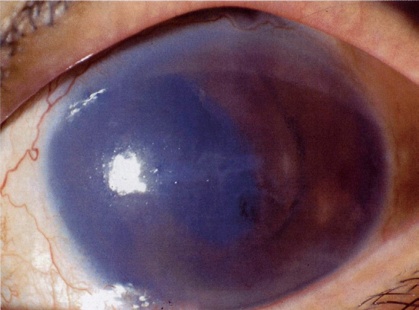
| 選択肢 | 解説 |
|---|---|
| ａ 角膜ヘルペス | 単純ヘルペスウイルスによる角膜炎で、上皮型は樹枝状角膜炎（フルオレセインで染まる枝分かれ状の潰瘍）、実質型は円板状の混濁を呈する。再発性で角膜知覚が低下するのが特徴で、本例のようなびまん性の全面浮腫とは像が異なる。 |
| ｂ 角膜ジストロフィ | 遺伝性・両眼性・進行性に角膜の特定の層が混濁する疾患群である。なかでもFuchs角膜内皮ジストロフィは内皮の変性で水疱性角膜症をきたすが、両眼性で高度の左右差はなく、手術歴とも関係しない。本例は片眼性で20年前の手術歴に紐づいている。 |
| ｃ 角膜辺縁潰瘍 | 角膜周辺部に生じる潰瘍で、関節リウマチや多発血管炎性肉芽腫症などの膠原病、ブドウ球菌に対する過敏反応（カタル性潰瘍）が原因になる。病変は周辺に限局し、中央を含む全面の浮腫にはならない。 |
| ◯ ｄ 水疱性角膜症 | 写真では角膜全体が青灰色にびまん性に混濁・浮腫し、表面には不整な反射（上皮の水疱）がみられる。20年前の前房眼内レンズが長年にわたり角膜内皮を機械的・慢性的に傷害し、内皮細胞密度が限界（約500/mm²）を下回ってポンプ機能が破綻したものである。実質浮腫で視力が落ち（右0.01）、上皮水疱が破れると強い眼痛を生じる——「視力低下＋眼痛」という2主訴に合致する。 |
| ｅ 角膜細菌感染症 | 細菌性角膜潰瘍は急性に進行し、限局した白色の浸潤病巣・角膜潰瘍・前房蓄膿・膿性眼脂を伴う。コンタクトレンズ装用や角膜上皮欠損が誘因になる。本例は1年かけて徐々に進行しており、感染の経過ではない。 |
| 時期 | 合併症 | 特徴・対応 |
|---|---|---|
| 術中 | 後囊破損・核落下、駆逐性出血 | 硝子体手術・レンズの縫着へ移行 |
| 術後2〜7日 | 急性術後眼内炎 | 眼痛・前房蓄膿→抗菌薬＋硝子体手術（NO.81） |
| 術後1〜3か月 | 囊胞様黄斑浮腫（Irvine-Gass症候群） | OCTで診断、NSAID・ステロイド点眼 |
| 数か月〜数年 | 後発白内障 | YAGレーザー後囊切開（NO.83） |
| 数年〜数十年 | 水疱性角膜症 | 角膜内皮移植（DSAEK/DMEK） |
| いつでも | 眼内レンズの偏位・落下、遅発性眼内炎 | 整復・縫着／C. acnes を想定した治療 |
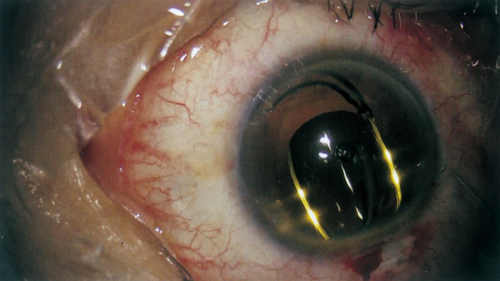
| 選択肢 | 解説 |
|---|---|
| ａ 硝子体切除 | 硝子体手術では毛様体扁平部の強膜を貫く3ポート（灌流・照明・硝子体カッター）を用い、強膜側から器具を入れる。写真の器具は角膜切開創から前房内へ入っており、操作面は瞳孔領の高さである。 |
| ｂ 縮瞳薬注入 | 手術終了時に前房内へアセチルコリンなどを注入して瞳孔を戻す操作はあるが、注入に用いるのは先の丸いカニューレで、眼内に物体が残る所見にはならない。写真で瞳孔内に見えている黄色の弧は薬液ではなく器具でもない。 |
| ｃ 水晶体前囊切開 | シストトームや鑷子で前囊に直径5mm前後の円窓を作る連続円形前囊切開〈CCC〉は手術のごく初期の手技である。この段階では瞳孔領に混濁した水晶体が残っているはずだが、写真の瞳孔領は澄明で水晶体の混濁が無い＝すでに摘出後である。 |
| ｄ 水晶体乳化吸引 | 超音波チップと灌流吸引を備えた太い筒状のハンドピースを用いて核を砕きながら吸引する操作である。この最中は瞳孔領に核・皮質が残っており、眼内に細い弧状の構造物が見えることはない。 |
| ◯ ｅ 眼内レンズ挿入 | 瞳孔領に細い黄色の弧が上下2本、対角線状に見えている——これが眼内レンズの支持部（ハプティクス／ループ）である。光学部は透明でほとんど写らないが、支持部の形（2本のC字型ループ）が眼内レンズの存在を示す。瞳孔領はすでに澄明で水晶体の混濁が無く、角膜切開創から細い器具（インジェクターの先端あるいは鑷子）が入っている＝レンズを囊内に挿入・展開している最終段階である。 |
| 固定位置 | 方法 | 備考 |
|---|---|---|
| 囊内固定 | 残した水晶体囊の袋の中に収める | 現在の標準。最も安定し合併症が少ない |
| 毛様溝固定 | 虹彩と囊の間の溝に置く | 後囊破損時。前囊が残っていることが条件 |
| 強膜内固定・強膜縫着 | 支持部を強膜に固定する | 囊が使えない場合（Zinn小帯断裂・水晶体脱臼） |
| 前房固定・虹彩支持型 | 隅角や虹彩に固定する | 角膜内皮を障害し水疱性角膜症の原因（NO.89）。ほぼ用いない |
| 選択肢 | 解説 |
|---|---|
| ◯ ａ 白内障 ―――――――――――― 霧 視 | 水晶体が濁ると入射光が散乱してコントラストが落ち、霧視（かすみ）として自覚される。白内障の代表症状は霧視・羞明・昼盲で、進行すると近視化や単眼複視も加わる（NO.84）。 |
| ｂ 加齢黄斑変性 ――――――――― 羞 明 | 加齢黄斑変性は黄斑の網膜色素上皮〜脈絡膜の病変で、症状は変視症（ゆがんで見える）・中心暗点・視力低下である。羞明は中間透光体の混濁（白内障・角膜混濁）による症状であり、組合せとして誤り。 |
| ｃ 開放隅角緑内障 ―――――――― 飛蚊症 | 開放隅角緑内障は視神経乳頭の陥凹拡大と対応する視野障害が本態で、進行するまで自覚症状に乏しい。飛蚊症は硝子体混濁（後部硝子体剝離・網膜裂孔・硝子体出血）の症状であり、緑内障とは結び付かない。 |
| ｄ 裂孔原性網膜剝離 ――――――― 近視化 | 裂孔原性網膜剝離の症状は光視症・飛蚊症の急増→視野欠損（カーテン様）→視力低下と進む。近視化は核白内障（屈折力の増加）や糖尿病の高血糖時にみられる現象で、網膜剝離では起こらない。 |
| ｅ 網膜中心動脈閉塞症 ―――――― 小視症 | 網膜中心動脈閉塞症は突然・無痛性・高度の視力低下で発症し、眼底に網膜白濁と桜実紅斑〈cherry-red spot〉をみる眼科救急である。小視症は視細胞の間隔が広がる病態（中心性漿液性脈絡網膜症・黄斑部の網膜剝離）の症状である。 |
| 疾患 | 主症状 | 特徴的な所見 |
|---|---|---|
| 白内障 | 霧視・羞明・昼盲・単眼複視・近視化 | 水晶体混濁・矯正不能 |
| 急性緑内障発作 | 眼痛・頭痛・悪心・虹視・霧視 | 高眼圧・角膜浮腫・浅前房・中等度散瞳 |
| 開放隅角緑内障 | 無症状→視野障害 | 乳頭陥凹拡大・網膜神経線維層欠損 |
| 加齢黄斑変性 | 変視症・中心暗点・視力低下 | ドルーゼン・脈絡膜新生血管（OCT/FA） |
| 裂孔原性網膜剝離 | 光視症・飛蚊症→視野欠損 | 網膜裂孔・剝離した網膜の波打ち |
| 中心性漿液性脈絡網膜症 | 小視症・変視症・中心暗点 | 若〜中年男性・漿液性網膜剝離 |
| 網膜中心動脈閉塞症 | 突然の無痛性高度視力低下 | 桜実紅斑・網膜白濁（眼科救急） |
| 網膜色素変性 | 夜盲→輪状暗点→視野狭窄 | 骨小体様色素沈着・ERG消失 |
| 選択肢 | 解説 |
|---|---|
| ａ 隅角検査 | 隅角鏡で線維柱帯・Schwalbe線・強膜岬などを観察し、隅角の開大度を評価する検査である。緑内障の病型分類（開放隅角か閉塞隅角か）に必須だが、レンズの度数計算とは無関係である。 |
| ｂ 暗順応検査 | 明所から暗所へ移ったときの光覚閾値の回復を測る検査で、網膜色素変性やビタミンA欠乏症の夜盲を評価する。 |
| ◯ ｃ 眼軸長検査 | 眼内レンズの度数は角膜屈折力（角膜曲率）と眼軸長の2つを計算式に入れて決める。問題文が「角膜曲率測定の他に」と限定している以上、残る必須項目は眼軸長である。光学式（部分干渉計）が第一選択で、成熟白内障で測れない場合は超音波Aモードを用いる（NO.87）。 |
| ｄ 蛍光眼底造影 | フルオレセインやインドシアニングリーンを静注し、網膜・脈絡膜の血管と血液網膜関門の状態を評価する検査である。糖尿病網膜症・網膜静脈閉塞症・加齢黄斑変性で用いる。 |
| ｅ 両眼視機能検査 | 同時視・融像・立体視の3段階を評価する検査で、斜視・弱視の診療で用いる。白内障術後に不同視が生じると両眼視に影響しうるが、度数決定のために測る値ではない。 |
| 軸性 | 屈折性 | |
|---|---|---|
| 近視 | 眼軸長が長い（＞24mm）＝大多数 | 角膜・水晶体の屈折力が強い（核白内障・円錐角膜） |
| 遠視 | 眼軸長が短い（＜24mm）＝小児の遠視 | 屈折力が弱い（無水晶体眼・扁平角膜） |
| 選択肢 | 解説 |
|---|---|
| ａ 高齢者では全身麻酔下で行うことが望ましい。 | 白内障手術は点眼麻酔＋テノン囊下麻酔（または球後麻酔）の局所麻酔で日帰りに行うのが標準である。手術時間は10〜20分と短く、全身麻酔はむしろ高齢者に呼吸・循環の負担をかける。全身麻酔を選ぶのは小児や、認知症・不随意運動などで安静が保てない場合に限られる。 |
| ◯ ｂ 水晶体超音波乳化吸引術が主に行われる。 | 現在の標準術式は水晶体超音波乳化吸引術〈PEA〉＋眼内レンズ挿入術である。2.4mm前後の小切開から超音波チップを入れて核を砕き吸引し、残した囊の中に折り畳んだ眼内レンズを挿入する（NO.90）。小切開・無縫合のため術後乱視が小さく回復が速いのが囊内摘出術〈ICCE〉や囊外摘出術〈ECCE〉に対する最大の利点である。 |
| ｃ 糖尿病を合併する場合は眼内レンズ挿入の適応がない。 | 糖尿病は禁忌ではない。むしろ白内障で眼底が見えないと糖尿病網膜症の評価・治療（汎網膜光凝固）ができないため、手術が必要になる場面が多い。ただし術後に網膜症や黄斑浮腫が悪化しうるので、術前に血糖と網膜症の状態を評価し、術後も慎重に経過を追う。 |
| ｄ 術後約1か月は抗菌薬の内服が必要である。 | 術後の感染予防は抗菌薬点眼が中心で、数週間かけて漸減する。内服を1か月続ける根拠は無く、耐性菌や副作用の観点からも推奨されない。術直後の予防としては前房内抗菌薬投与の有効性が示されている。 |
| ｅ 眼内レンズは定期的に入れ替える必要がある。 | 眼内レンズは劣化せず、生涯にわたり入れ替えは不要である（NO.80）。術後年余の霧視は後発白内障であり、YAGレーザー後囊切開で対処する（NO.83）。 |
| 患者の疑問 | 正しい説明 |
|---|---|
| 点眼で治りませんか | 濁った水晶体は薬では戻らない。手術のみが治療 |
| レンズは入れ替えが要りますか | 不要。ただし後発白内障はレーザーで処置することがある |
| 眼鏡が不要になりますか | 単焦点レンズに調節力は無い。遠方に合わせれば近方に眼鏡が要る |
| 糖尿病があるので手術できませんか | 禁忌ではない。眼底評価のためむしろ必要なことが多い |
| 入院が必要ですか | 局所麻酔の日帰り手術が標準 |
| 選択肢 | 解説 |
|---|---|
| ａ 蛍光眼底造影 | フルオレセインを静注して網膜血管を撮影する検査だが、眼底が見えない眼では撮影できない。造影剤によるアナフィラキシーのリスクもあり、「まず行う検査」にはなり得ない。 |
| ｂ 光覚〈暗順応〉検査 | 暗順応検査は網膜色素変性やビタミンA欠乏の夜盲を評価する検査である。なお「光覚（光の有無・方向が分かるか）」の確認自体はベッドサイドで有用だが、本例はすでに手動弁＝手の動きは分かると記載があり光覚は保たれていることが判明している。 |
| ◯ ｃ 網膜電図〈ERG〉 | 両眼とも水晶体混濁で眼底が透見できず、網膜が機能しているかどうかが分からない状態である。ERGは濁った中間透光体を越えて網膜の電位を記録できるため、この状況で網膜機能を評価できる検査になる（NO.86と同じ論理）。とくに右眼は数日で手動弁まで急落し眼圧も8mmHgと低い——網膜剝離などの器質的病変が隠れている可能性があり、ERG（および超音波Bモード）で確認したうえで白内障手術の適応と術後視力予後を判断する。 |
| ｄ 視覚誘発電位〈VEP〉 | 網膜から後頭葉視覚野までの視路全体の伝導を頭皮電極で記録する検査である。視神経炎や多発性硬化症、詐病・心因性視力障害の評価に用いる。中間透光体が濁ると刺激そのものが減弱して波形が低下するため、白内障眼の網膜機能評価には向かない。 |
| ｅ 頭部CT | 頭蓋内病変（腫瘍・出血）による視路障害を疑うときの検査である。本例は眼所見（両眼の水晶体混濁）で視力低下が十分に説明でき、視野欠損の型や神経学的異常など頭蓋内を疑う所見も無い。 |
| 検査 | 何をみるか | 適する場面 |
|---|---|---|
| 網膜電図〈ERG〉 | 網膜（視細胞・双極細胞）の機能 | 透光体混濁で眼底が見えない眼、網膜色素変性 |
| 眼球電図〈EOG〉 | 網膜色素上皮の機能 | 卵黄状黄斑ジストロフィ（Best病） |
| 視覚誘発電位〈VEP〉 | 網膜〜後頭葉の視路全体 | 視神経炎・多発性硬化症・心因性視力障害・乳児の視力評価 |
| 多局所ERG | 黄斑を含む部位別の網膜機能 | 黄斑疾患（通常のERGでは検出しにくい） |
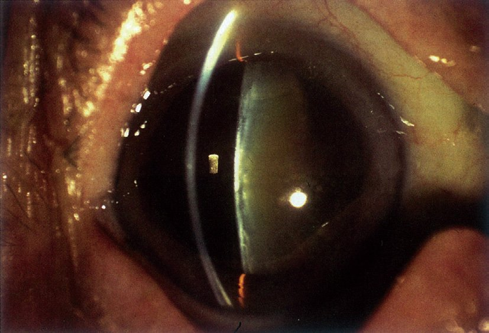
| 選択肢 | 解説 |
|---|---|
| ａ 経過観察 | 矯正視力が右0.1・左0.2まで低下し、身の回りのことができにくくなっている＝日常生活に明らかな支障が出ている。白内障は自然に治らないうえ、放置すれば成熟・過熟へ進んで手術が難しくなり水晶体起因性緑内障の危険も生じる（NO.79）。高齢者では視力低下が転倒・骨折・閉じこもり・認知機能低下に直結するため、経過観察は適切でない。 |
| ｂ 硝子体切除術 | 硝子体出血・増殖糖尿病網膜症・黄斑上膜・網膜剝離・眼内炎などに対する術式である。本例は眼底に異常を認めず、混濁しているのは水晶体である。 |
| ｃ ビタミンA内服 | ビタミンA欠乏症では夜盲・眼球乾燥症・Bitot斑・角膜軟化症をきたす。本例に夜盲や角結膜の乾燥所見は無く、ビタミンAで水晶体の混濁が消えることもない。 |
| ｄ 副腎皮質ステロイド点眼 | ぶどう膜炎や術後炎症を抑える薬である。本例に前房内炎症や角膜後面沈着物は無い。むしろステロイドの長期使用は後囊下白内障とステロイド緑内障を招く——白内障に対して用いれば有害である。 |
| ◯ ｅ 水晶体超音波乳化吸引・眼内レンズ挿入術 | 写真では散瞳下の水晶体が黄白色にびまん性に混濁し、細隙光の断面でも核・皮質が白く光っている＝進行した加齢白内障である。両眼性・矯正不能（0.1／0.2）・眼底正常という条件が揃い、混濁を除去すれば視力回復が見込める。加えて「身の回りのことができにくい」＝日常生活の支障という手術適応の中核が明記されている。標準術式であるPEA＋IOLを行う。 |
| 選択肢 | 本来の適応 | 本例で不適な理由 |
|---|---|---|
| 経過観察 | 視機能に支障が無い初期白内障 | ADLに支障あり・自然治癒しない |
| 硝子体切除術 | 硝子体出血・網膜剝離・黄斑上膜 | 眼底に異常なし |
| ビタミンA内服 | ビタミンA欠乏症（夜盲・角膜軟化症） | 欠乏を示す所見なし |
| ステロイド点眼 | ぶどう膜炎・術後炎症 | 炎症所見なし・白内障を悪化させる |
| PEA＋IOL | 日常生活に支障のある白内障 | —（正解） |
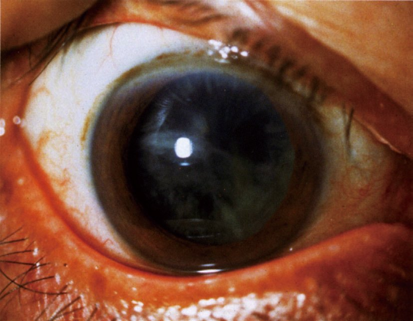
| 選択肢 | 解説 |
|---|---|
| ◯ ａ 眼軸長 | 術後の見え方（＝術後視機能）を決めるのは眼内レンズの度数が合っているかである。度数計算に必須の実測値が眼軸長と角膜屈折力の2つで、眼軸長は1mmの誤差が約2.5〜3Dの屈折誤差になる最も影響の大きい因子である（NO.87・92）。 |
| ｂ 角膜厚 | 眼圧測定値の補正や円錐角膜・角膜内皮機能の評価に用いる値である。手術の安全性に関わる情報ではあるが、眼内レンズの度数計算には入らない。 |
| ◯ ｃ 角膜屈折力 | 角膜は眼全体の屈折の約3分の2（約+43D）を担う。ケラトメータやトポグラフィで角膜曲率半径を測って角膜屈折力を求め、眼軸長と合わせて眼内レンズの度数を計算する。同時に角膜乱視の量と軸も分かるため、トーリック眼内レンズを選ぶか、切開創の位置で乱視を減らすかという術式そのものの選択にも直結する。 |
| ｄ 水晶体厚 | 膨潤期の判定や一部の度数計算式の補助因子になりうるが、摘出してしまう組織であり必須項目ではない（NO.87）。 |
| ｅ 水晶体核硬度 | 核が硬いほど超音波エネルギーを要し角膜内皮への負担が増えるため、超音波の設定や、極端に硬い例で囊外摘出術を選ぶといった判断には確かに関わる。ただし核硬度は細隙灯顕微鏡での視診による分類（Emery分類など）であって独立した「検査」として数値化するものではなく、術後の屈折＝視機能を決める値ではない。本問が問うのは「術後視機能に優れた」術式選択であり、術中の負担ではなく術後の見え方を左右する検査を選ぶ。 |
| 測る値 | 何に使うか | 本問での扱い |
|---|---|---|
| 眼軸長 | レンズ度数の計算（最も誤差が効く） | ◯ 正解 |
| 角膜屈折力（曲率半径） | レンズ度数の計算・角膜乱視の把握 | ◯ 正解 |
| 角膜内皮細胞密度 | 水疱性角膜症のリスク評価 | 安全性の指標（NO.82） |
| 角膜厚 | 眼圧補正・円錐角膜・内皮機能 | 度数計算には不要 |
| 前房深度 | 閉塞隅角の評価・新しい計算式の補助因子 | 必須ではない |
| 核硬度 | 超音波設定・術式（PEA/ECCE）の選択 | 術中の負担に関する所見（視診） |
| ERG・超音波Bモード | 網膜機能・形態の評価 | 眼底が見えない場合（NO.86・94） |